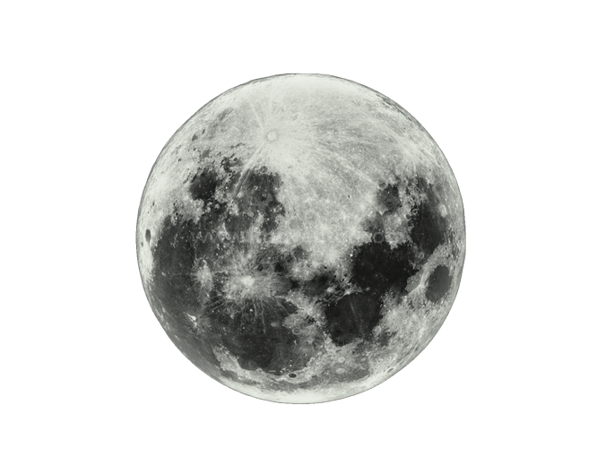
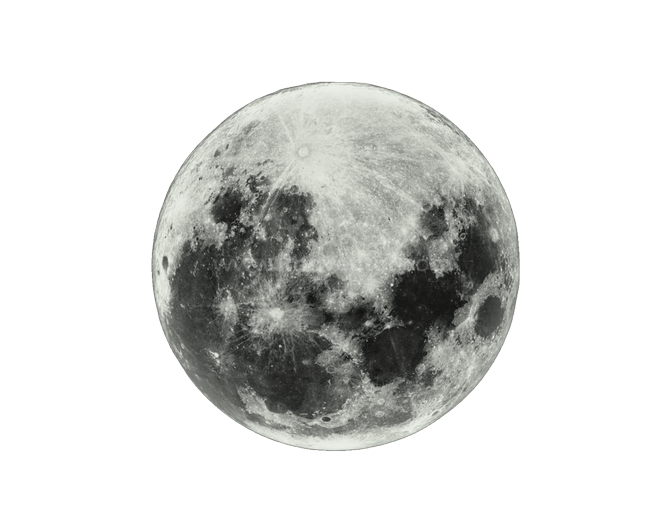
Mở đầu
Mặt Trăng, Trái Đất đều tự quay quanh trục đi qua tâm của nó và cùng chuyển động xung quanh Mặt Trời đã tạo ra nhiều hiện tượng thiên nhiên trên Trái Đất như nhật thực, nguyệt thực, thuỷ triều. Vậy, bản chất và thời điểm xảy các hiện tượng này như thế nào, chúng ta có dự đoán được không?
Hiện tượng nhật thực
Mặt Trời, Mặt Trăng, Trái Đất thẳng hàng nhau và xếp đúng theo thứ tự trên, xảy ra vào ban ngày khi Mặt Trăng che khuất Mặt Trời một phần hoặc toàn phần thì khi đó trên Trái Đất sẽ có vùng không thấy được Mặt Trời. Đó là nhật thực một phần hoặc nhật thực toàn phần.
Mặt Trăng, Trái Đất đều tự quay quanh trục đi qua tâm của nó.
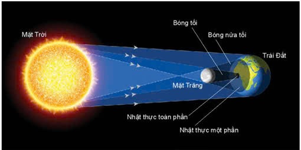Các hiện tượng thiên văn (Tiếp)
Hiện tượng nguyệt thực
Mặt Trăng, Trái Đất, Mặt Trời thẳng hàng và xếp đúng thứ tự trên, xảy ra vào buổi tối, khi Trái Đất che khuất Mặt Trời, Mặt Trăng khi đó không nhận được ánh sáng từ Mặt Trời chiếu đến nên không có ánh sáng phản xạ từ Mặt Trăng chiếu đến Trái Đất, khi đó trên Trái Đất có nơi sẽ không quan sát được Mặt Trăng.
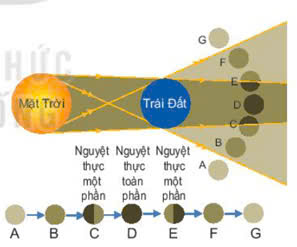Hiện tượng thủy triều
Do Mặt Trăng chuyển động xung quanh Trái Đất, Mặt Trăng tác dụng lực hấp dẫn lên lớp nước biển trên bề mặt Trái Đất đồng thời Trái Đất lại tự quay nên lớp nước biển sẽ có thời điểm bị dâng lên cao, đó chính là thủy triều.
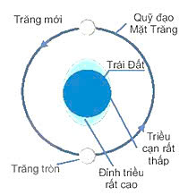Chúng ta có dự đoán được thời điểm xảy ra các hiện tượng.
II. Nhật Thực
Nêu điều kiện xảy ra hiện tượng nguyệt thực và nhật thực. Vì sao không thể xảy ra hai lần nhật thực, nguyệt thực mỗi tháng?
- Điều kiện để xảy ra hiện tượng nguyệt thực: Mặt Trời, Trái Đất, Mặt Trăng nằm trên cùng một đường thẳng.
- Điều kiện để xảy ra hiện tượng nhật thực: Khi ba thiên thể Mặt Trời, Mặt Trăng, Trái Đất gần như thẳng hàng và Mặt Trăng ở vị trí giữa Trái Đất và Mặt Trời.
Tại sao không xảy ra thường xuyên?
Không thể xảy ra hai lần nhật thực, nguyệt thực mỗi tháng vì, hiện tượng nhật thực và nguyệt thực chỉ có thể xảy ra khi Trái Đất – Mặt Trăng – Mặt Trời gần như cùng nằm trên một đường thẳng.
Trong khi đó, mặt phẳng bạch đạo và mặt phẳng hoàng đạo lệch nhau một góc 5o nên Mặt Trăng sẽ ở hơi cao hơn hoặc hơi thấp hơn mặt phẳng hoàng đạo, do đó sự thẳng hàng hoàn hảo không thể diễn ra một cách thường xuyên.
1. Nhật thực toàn phần, hình khuyên và một phần
Câu hỏi 1: Mặt Trăng ở vị trí nào so với Trái Đất và Mặt Trời sẽ xảy ra nhật thực?
Khi Mặt Trăng ở vị trí giữa Trái Đất và Mặt Trời thì sẽ xảy ra nhật thực.
Câu hỏi 2: Hiện tượng nhật thực mỗi năm thường xảy ra như thế nào?
Trong một năm có thể có tới 5 lần nhật thực:
- Lần nhật thực đầu tiên vào tháng giêng.
- Lần 2 vào kì không trăng của tuần Trăng tiếp theo.
- Lần 3 là sau 6 tuần Trăng.
- Lần 4 xảy ra vào tuần Trăng tiếp theo.
- Lần 5 xảy ra sau lần đầu 12 tuần Trăng.
Phân biệt Nhật thực toàn phần và hình khuyên
Câu hỏi 3: Phân biệt nhật thực toàn phần và nhật thực hình khuyên. Nêu vai trò của Mặt Trăng trong hai hiện tượng này.
Nhật thực toàn phần
Xảy ra khi đĩa tối của Mặt Trăng che khuất hoàn toàn Mặt Trời và người quan sát nằm trong đĩa tối của Mặt Trăng.
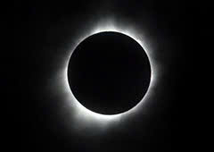Nhật thực hình khuyên
Xảy ra khi Mặt Trời, Mặt Trăng, Trái Đất nằm cùng trên một đường thẳng, nhưng Mặt Trăng không che hết toàn toàn Mặt Trời. Khi đó Mặt Trời vẫn hiện ra như một vòng đai rực rỡ bao quanh đĩa Mặt Trăng.

Vai trò của Mặt Trăng: đóng vai trò là vật chắn sáng, làm cho ánh sáng Mặt Trời không thể chiếu đến Trái Đất.
2. Diễn biến nhật thực
Diễn biến của Nhật thực có thể tóm gọn như sau:
- Bắt đầu: Mặt Trăng di chuyển vào giữa Trái Đất và Mặt Trời, bắt đầu che khuất một phần rìa đĩa Mặt Trời.
- Cực đại: Ba thiên thể thẳng hàng. Tùy vị trí quan sát mà xảy ra một trong ba trường hợp:
- Toàn phần: Mặt Trời bị che khuất hoàn toàn, bầu trời tối sầm, thấy vành nhật hoa.
- Một phần: Mặt Trời bị che khuất một góc, trông giống hình lưỡi liềm.
- Hình khuyên: Mặt Trăng che chính giữa nhưng không hết, tạo ra vòng tròn sáng xung quanh.
- Kết thúc: Mặt Trăng rời khỏi đĩa Mặt Trời, ánh sáng trở lại bình thường.
Lưu ý: Chỉ xảy ra vào ngày không Trăng (mùng 1 âm lịch) và khi Mặt Trăng nằm gần mặt phẳng quỹ đạo của Trái Đất.
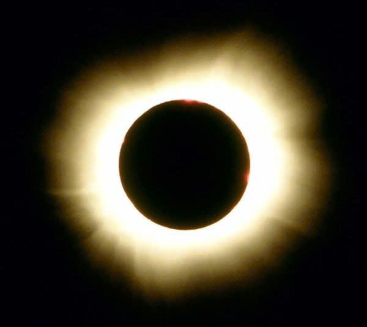 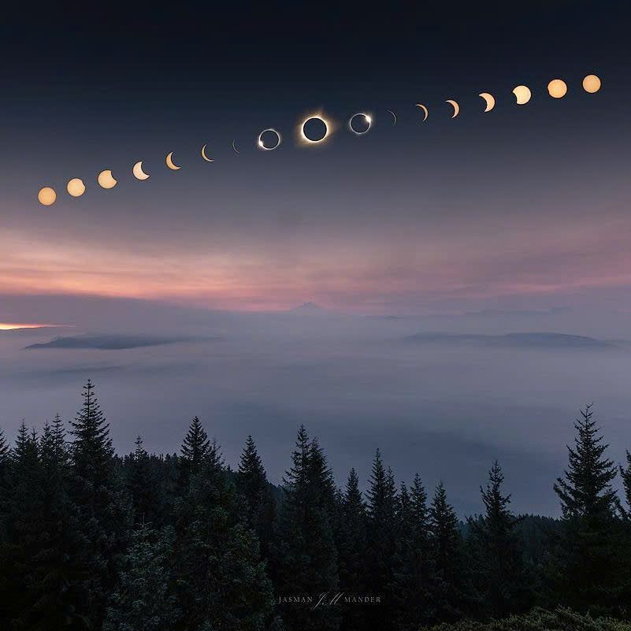III. Nguyệt thực
Hãy mô tả diễn biến của hiện tượng nguyệt thực.
Diễn biến nguyệt thực là quá trình Mặt Trăng di chuyển vào vùng bóng tối của Trái Đất, bắt đầu từ pha nửa tối (mờ dần), đến một phần (bị khuyết) rồi toàn phần (đỏ rực màu máu) khi đi vào bóng tối hoàn toàn, sau đó ngược lại, kéo dài vài giờ và có thể quan sát bằng mắt thường.
Nguyệt thực là hiện tượng Mặt Trăng bị che khuất khi đi vào vùng bóng tối phía sau Trái Đất.
Chi tiết diễn biến Nguyệt thực
1. Chuẩn bị (Trước nguyệt thực)
Vị trí: Mặt Trời, Trái Đất, Mặt Trăng gần thẳng hàng, Trái Đất ở giữa. Chỉ xảy ra vào ngày Trăng tròn.
Pha nửa tối (Penumbral): Mặt Trăng bắt đầu đi vào vùng nửa tối (bóng mờ) của Trái Đất. Mặt Trăng chỉ tối đi một chút, khó nhận thấy bằng mắt thường.
2. Diễn biến chính (Khi vào bóng tối)
Nguyệt thực một phần (Partial): Mặt Trăng bắt đầu đi vào vùng bóng tối (umbra) của Trái Đất. Một phần Mặt Trăng bị che khuất, tạo cảm giác như bị khuyết đi một mảng tối.
Nguyệt thực toàn phần (Total): Toàn bộ Mặt Trăng nằm trọn trong bóng tối của Trái Đất. Ánh sáng Mặt Trời bị chặn lại, chỉ còn ánh sáng đỏ từ hoàng hôn trên Trái Đất khúc xạ tới, khiến Mặt Trăng chuyển sang màu đỏ đồng, đỏ cam hoặc đỏ sẫm (Mặt Trăng máu).
3. Kết thúc (Sau nguyệt thực)
Nguyệt thực toàn phần kết thúc: Mặt Trăng bắt đầu rời vùng bóng tối hoàn toàn. Nguyệt thực một phần kết thúc: Phần bị che khuất dần biến mất. Pha nửa tối kết thúc: Mặt Trăng trở lại độ sáng bình thường.
Các pha Nguyệt thực (Hình 6.9)
Câu hỏi 1: Sử dụng Hình 6.9 trình bày các pha nguyệt thực.
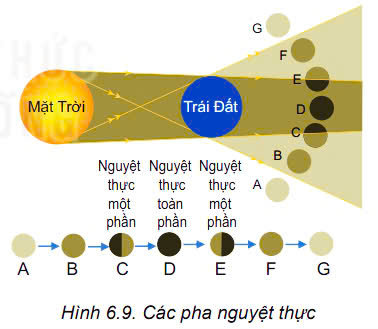- Khi Mặt Trăng nằm ngoài vùng nửa tối và vùng tối (vị trí A và G) thì bề mặt Mặt Trăng hướng về phía Mặt Trời được chiếu sáng hoàn toàn.
- Khi Mặt Trăng nằm hoàn toàn trong vùng nửa tối (B và F) thì cường độ sáng từ Mặt Trời chiếu đến Mặt Trăng giảm đi do bị Trái Đất che khuất một phần nên từ nửa tối của Trái Đất thấy Mặt Trăng mờ dần.
- Khi Mặt Trăng có một nửa nằm trong vùng tối và một nửa nằm trong vùng nửa tối (C và E) thì khi đó ta quan sát được nguyệt thực một phần.
- Khi Mặt Trăng nằm hoàn toàn trong vùng tối thì ta quan sát được nguyệt thực toàn phần.
Thời gian diễn ra
Câu hỏi 2: Giải thích tại sao nguyệt thực lại kéo dài hơn so với nhật thực.
Nguyệt thực kéo dài hơn nhật thực vì Trái Đất có kích thước lớn hơn Mặt Trăng, do đó bóng của Trái Đất che khuất Mặt Trăng lâu hơn so với bóng của Mặt Trăng khi che khuất Trái Đất.
IV. Thủy triều
Giải thích tại sao khi Mặt Trời, Trái Đất và Mặt Trăng thẳng hàng sẽ xảy ra triều cường.
Khi Mặt Trời, Trái Đất và Mặt Trăng thẳng hàng, tổng hợp lực hấp dẫn do Mặt Trăng và Mặt Trời tác dụng lên Trái Đất và lớp nước bao xung quanh là lớn hơn, do đó sẽ xảy ra triều cường.
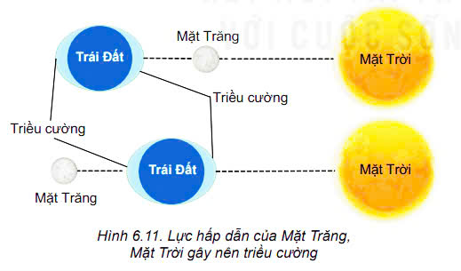Lực hấp dẫn và Thủy triều
Hãy biểu diễn lực hấp dẫn giữa Mặt Trăng và Trái Đất ở những vùng triều cao.
Lực hấp dẫn do Mặt Trăng và Mặt Trời tác dụng lên lớp nước trên bề mặt Trái Đất là F1; F2.
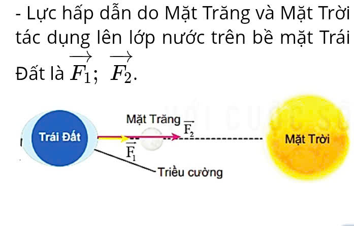 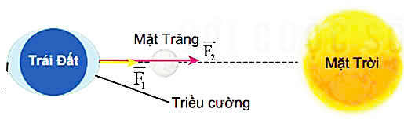Triều cường cuối năm
Hãy giải thích tại sao vào khoảng tháng 9, tháng 10 hằng năm thường xảy ra triều cường vào cuối buổi chiều gây ngập lụt.
Vì khi đó khoảng cách giữa Mặt Trời, Mặt Trăng và Trái Đất là nhỏ nhất lên lực hấp dẫn lớn nhất, dẫn đến triều cường mạnh nhất.